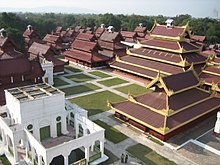
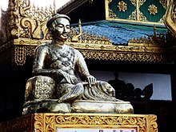
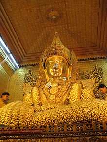
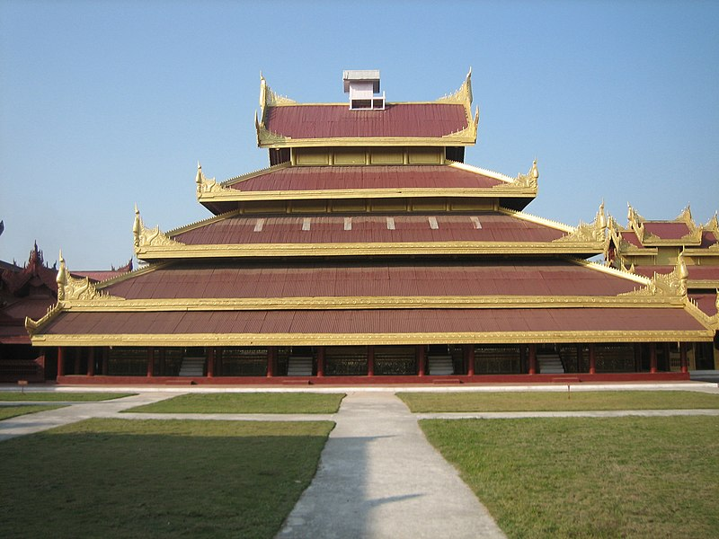
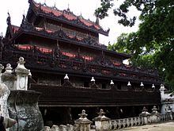
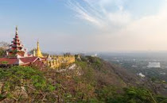
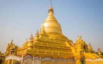
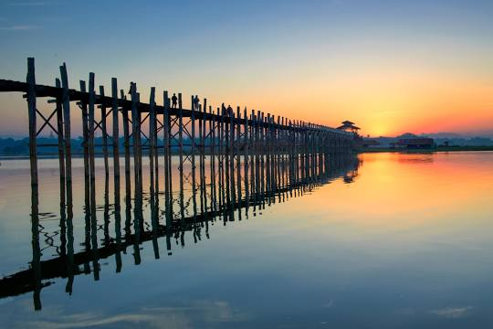
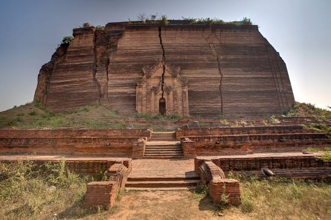

Mandalay (/ˌmændəˈleɪ/ or /ˈmændəleɪ/; Burmese: မန္တလေး; MLCTS: manta.le: [máɰ̃dəlé]) is the second-largest city in Myanmar, after Yangon. Located on the east bank of the Irrawaddy River, 716 km (445 mi) north of Yangon, the city has a population of 1,225,553 (2014 census).
Mandalay was founded in 1857 by King Mindon, replacing Amarapura as the new royal capital of the Konbaung dynasty. It was Burma's final royal capital before the kingdom's annexation by the British Empire in 1885. Under British rule, Mandalay remained commercially and culturally important despite the rise of Yangon, the new capital of British Burma. The city suffered extensive destruction during the Japanese conquest of Burma in the Second World War. In 1948, Mandalay became part of the newly independent Union of Burma.
Today, Mandalay is the economic centre of Upper Myanmar and considered the centre of Burmese culture. A continuing influx of Chinese immigrants, mostly from Yunnan, since the late 20th century, has reshaped the city's ethnic makeup and increased commerce with China.[4][5][dead link] Despite Naypyidaw's recent rise, Mandalay remains Upper Burma's main commercial, educational and health center.
|  |
Like most former (and present) capitals of Burma, Mandalay was founded on the wishes of the ruler of the day. On 13 February 1857, King Mindon founded a new royal capital at the foot of Mandalay Hill, ostensibly to fulfill a prophecy on the founding of a metropolis of Buddhism in that exact place on the occasion of the 2,400th jubilee of Buddhism.[10] The new capital city site was 66 km2 (25.5 sq mi) in area, surrounded by four rivers. The plan called for a 144-square block grid patterned citadel, anchored by a 16 square block royal palace compound at the center by Mandalay Hill.[11] The 1020-acre (413-hectare) citadel was surrounded by four 2,032 m (6,666 ft) long walls and a moat 64 m (210 ft) wide, 4.6 m (15 ft) deep. At intervals of 169 m (555 ft) along the wall, were turrets with gold-tipped spires for watchmen.[12] The walls had three gates on each side, and five bridges to cross the moat.[11] In addition, the king also commissioned the Kuthodaw Pagoda, the Pahtan-haw Shwe Thein Ordination Hall, the Thudamma zayats or public houses for preaching Buddhism and a library for the Pāli Canon. |
|
In June 1857, the former royal palace of Amarapura was dismantled and moved by elephants to the new location at the foot of Mandalay Hill, although construction of the palace compound was officially completed only two years later, on Monday, 23 May 1859.[10] For the next 26 years, Mandalay was to be the last royal capital of the Konbaung Dynasty, the last independent Burmese kingdom before its final annexation by the British Empire. Mandalay ceased to be the capital on 28 November 1885 when the British conquered the city, looted the Pitakataik (Royal Library) and sent Thibaw Min and his queen Supayalat into exile, ending the Third Anglo-Burmese War.[citation needed] |
 |
|  |
Mahamuni
The Mahamuni Buddha Temple (Burmese: မဟာမုနိဘုရားကြီး, Burmese pronunciation: [məhà mṵnḭ pʰəjádʑí]; also called the Mahamuni Image) is a Buddhist temple and major pilgrimage site, located southwest of Mandalay, Myanmar (Burma) (Myanmar).[1] The Mahamuni Buddha image (literal meaning: The Great Sage) is deified in this temple, and originally came from Arakan.[2] It is highly venerated in Burma and central to many people's lives, as it is seen as an expression of representing the Buddha's life.[3] Ancient tradition refers to only five likenesses of the Buddha, made during his lifetime; two were in India, two in paradise, and the fifth is the Mahamuni Buddha image in Myanmar.[1][2][4][5][6] According to the legend, the Buddha visited the Dhanyawadi city of Arakan in 554 BC.[1] King Sanda Thuriya requested that an image was cast of him. After casting the Great Image, the Buddha breathed upon it, and thereafter the image became the exact likeness of the Mahamuni.[6] |
|  |
Mandalay Palace
The Mandalay Palace (Burmese: မန္တလေး နန်းတော်, pronounced [máɰ̃dəlé náɰ̃dɔ̀]), located in Mandalay, Myanmar, is the last royal palace of the last Burmese monarchy. The palace was constructed between 1857 and 1859 as part of King Mindon's founding of the new royal capital city of Mandalay. The plan of Mandalay Palace largely follows the traditional Burmese palace design, inside a walled fort surrounded by a moat. The palace itself is at the centre of the citadel and faces east. All buildings of the palace are of one storey in height. The number of spires above a building indicated the importance of the area below.[1] Mandalay Palace was the primary royal residence of King Mindon and King Thibaw, the last two kings of the country. The complex ceased to be a royal residence and seat of government on 28 November 1885 when, during the Third Anglo-Burmese War, troops of the Burma Field Force entered the palace and captured the royal family. The British turned the palace compound into Fort Dufferin, named after the then viceroy of India. Throughout the British colonial era, the palace was seen by the Burmese as the primary symbol of sovereignty and identity. Much of the palace compound was destroyed during World War II by allied bombing; only the royal mint and the watch tower survived. A replica of the palace was rebuilt in the 1990s with some modern materials. |
|  |
Shwenandaw Monastery
Shwenandaw Monastery (Burmese: ရွှေနန်းတော်ကျောင်း; MLCTS: hrwe. nan: taw kyaung:, IPA: [ʃwènáɰ̃dɔ̀ tʃáuɰ̃]; lit. "Golden Palace Monastery") is a historic Buddhist monastery located near Mandalay Hill, Mandalay Region, Myanmar (formerly Burma). Shwenandaw Monastery was built in 1878 by King Thibaw Min, who dismantled and relocated the apartment formerly occupied by his father, King Mindon Min, just before Mindon Min's death, at a cost of 120,000 rupees.[1] Thibaw removed the building in 10 October 1878, believing it to be haunted by his father's spirit.[2] The building reconstruction was finished in 31 Oct 1878, dedicated in memory of his father, on a plot adjoining Atumashi Monastery.[2]It is said that King Thibaw used it for meditation, and the meditation couch he sat on can still be seen. The building was originally part of the royal palace at Amarapura, before it was moved to Mandalay, where it formed the northern section of the Hmannan (Glass Palace) and part of the king's royal apartments.[2] The building was heavily gilt with gold and adorned with glass mosaic work.[1] The monastery is known for its teak carvings of Buddhist myths, which adorn its walls and roofs. The monastery is built in the traditional Burmese architectural style. Shwenandaw Monastery is the single remaining major original structure of the original Royal Palace today.[2] |
|
 Mandalay HillMandalay Hill is a 240 metres hill that is located to the northeast of the city centre of Mandalay in Myanmar. |
 Kuthodaw PagodaKuthodaw Pagoda is a Buddhist stupa, located in Mandalay, Burma, that contains the world's largest book. It lies at the foot of Mandalay Hill and was built during the reign of King Mindon. |
 U Bein BridgeThe bridge was built from wood reclaimed from the former royal palace in Inwa. It features 1,086 pillars that stretch out of the water, some of which have been replaced with concrete. |
 Mingun PahtodawgyiThe Mingun Pahtodawgyi is an incomplete monument stupa in Mingun, approximately 10 kilometres northwest of Mandalay in Sagaing Region in central Myanmar. The ruins are the remains of a massive construction project begun by King Bodawpaya in 1790 which was intentionally left unfinished. |